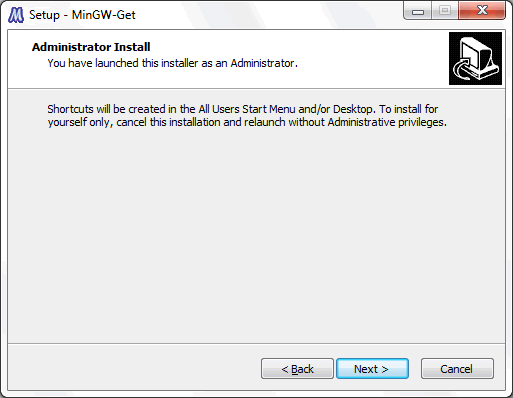
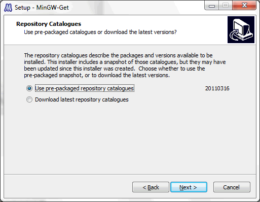
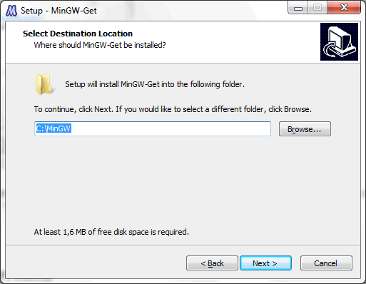
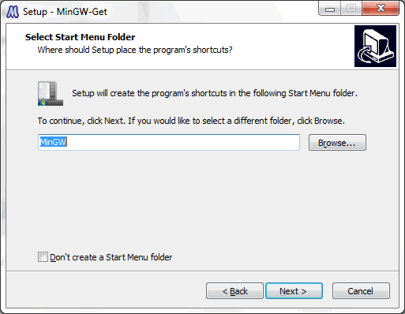
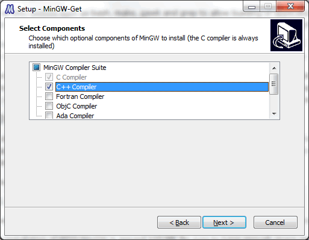
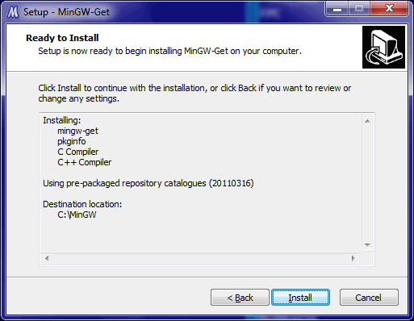
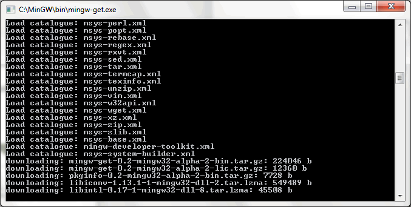
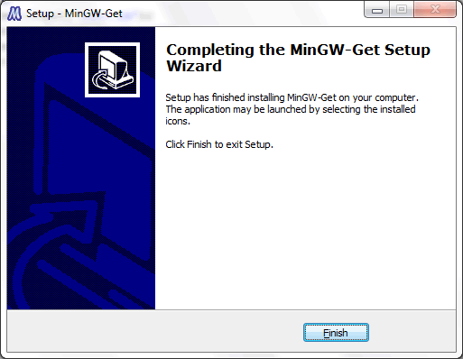
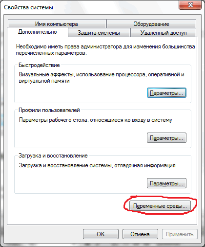
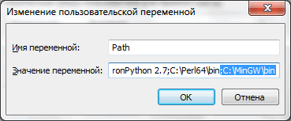

С/C++: ООП - принципы: классы, объекты, прототипы
Объектно-ориентированное программирование (ООП, OOP): абстракция, инкапсуляция,
наследование и полиморфизм
Объявление класса
Класс объединяет данные и функции, которые с ними работают, в один тип. Объявление класса начинается с ключевого слова class. После имени класса в фигурных скобках перечисляются его члены: поля (данные) и методы (функции-члены). Объявление заканчивается точкой с запятой.
Члены класса делятся на закрытую и открытую части. Метка private задаёт закрытые члены, доступные только методам этого класса и его дружественным функциям. Метка public задаёт открытые члены, которые образуют интерфейс класса. По умолчанию члены класса закрыты, а у структуры struct по умолчанию открыты все члены.
В примере класс Rat («рациональная дробь») хранит числитель n и знаменатель d в закрытых полях. Методы определены прямо в теле класса. Метод print объявлен с модификатором const, поэтому он не изменяет поля объекта.
Реализация на C++
#include <iostream>
using namespace std;
// Класс "рациональная дробь": числитель n и знаменатель d
class Rat {
private: // Закрытая часть: поля доступны методам класса
long n, d; // Числитель и знаменатель
public: // Открытая часть: методы образуют интерфейс класса
void set(long num, long den) { // Записывает числитель и знаменатель
n = num;
d = den;
}
void print() const { // const: метод не изменяет поля объекта
cout << n << "/" << d << endl;
}
};
int main() {
Rat a; // Объект класса Rat
a.set(3, 9);
a.print(); // Вывод: 3/9
return 0;
}
Объект класса создаётся в функции main объявлением переменной. Создание объектов рассматривается в следующем разделе.
Создание экземпляра
Экземпляр (объект) класса создаётся так же, как переменная встроенного типа, только тип задаёт имя класса. Объявление Rat a; создаёт объект в автоматической памяти: такой объект уничтожается при выходе из блока, в котором он объявлен.
Оператор new создаёт объект в динамической памяти и возвращает указатель на него. Такой объект существует до вызова delete. Доступ к членам объекта осуществляется через точку, а к членам объекта, заданного указателем, — через стрелку ->.
Массив объектов объявляется так же, как массив переменных встроенного типа: Rat arr[2];. Если в классе не объявлено ни одного конструктора, создание объекта без инициализатора не задаёт значения полей, поэтому в примере они задаются методом set. Конструкторы рассматриваются в следующем разделе.
Реализация на C++
#include <iostream>
using namespace std;
class Rat {
private:
long n, d;
public:
void set(long num, long den) {
n = num;
d = den;
}
void print() const {
cout << n << "/" << d << endl;
}
};
int main() {
Rat a; // Автоматическая память: объект уничтожается при выходе из блока
a.set(1, 3); // Доступ к элементам объекта через точку
a.print(); // Вывод: 1/3
Rat* p = new Rat; // Динамическая память: new возвращает указатель
p->set(2, 5); // Доступ к элементам через указатель и стрелку
p->print(); // Вывод: 2/5
delete p; // Освобождаем память, выделенную оператором new
Rat arr[2]; // Массив из двух объектов
arr[0].set(1, 2);
arr[1].set(3, 4);
for (int i = 0; i < 2; i++) {
arr[i].print(); // Вывод: 1/2, затем 3/4
}
return 0;
}
Конструкторы и деструкторы.
Конструктор — это метод, имя которого совпадает с именем класса. У конструктора нет типа результата, даже void. Конструктор вызывается автоматически при создании каждого объекта и задаёт его начальное состояние. Класс может иметь несколько конструкторов, они различаются списком параметров (перегрузка). Если в классе не объявлено ни одного конструктора, компилятор создаёт конструктор по умолчанию без параметров, который не задаёт значения полей встроенных типов. Если же объявлен хотя бы один конструктор, автоматический конструктор по умолчанию не создаётся.
Деструктор — это метод с именем, которое состоит из символа ~ и имени класса (например, ~Rat). Деструктор не имеет параметров и не перегружается. Он вызывается автоматически при уничтожении объекта: для объекта в автоматической памяти — при выходе из блока, для объекта, созданного оператором new, — при вызове delete. Деструктор нужен для освобождения ресурсов, которые объект получил во время работы, например памяти, выделенной оператором new.
Реализация на C++
#include <iostream>
using namespace std;
class Rat {
private:
long n, d;
public:
Rat() : n(0), d(1) { // Конструктор по умолчанию: дробь 0/1
cout << "construct " << n << "/" << d << endl;
}
Rat(long num, long den) : n(num), d(den) { // Конструктор с параметрами
cout << "construct " << n << "/" << d << endl;
}
~Rat() { // Деструктор: вызывается при уничтожении объекта
cout << "destruct " << n << "/" << d << endl;
}
void print() const {
cout << n << "/" << d << endl;
}
};
int main() {
Rat a; // Вызывается конструктор по умолчанию
Rat b(1, 3); // Вызывается конструктор с параметрами
b.print();
{
Rat c(2, 5); // Объект c создаётся во вложенном блоке
c.print();
} // Здесь вызывается деструктор объекта c
cout << "end of main" << endl;
return 0; // Затем деструкторы b и a, в обратном порядке создания
}
В примере конструкторы и деструктор выводят сообщения о своих вызовах. Объект a создаётся конструктором по умолчанию, объект b — конструктором с параметрами. Объект c создаётся и уничтожается во вложенном блоке. Объекты b и a уничтожаются при выходе из функции main в порядке, обратном порядку создания.
Перегрузка операторов в C++. Вывод в поток.
Перегрузка операторов позволяет применять встроенные операторы (+, *, == и другие) к объектам пользовательского класса. Перегруженный оператор можно записать как функцию-член с именем operator и знаком оператора, например operator+. Левым операндом при этом служит объект, для которого вызывается функция, а правый операнд передаётся параметром.
Вывод в поток. В выражении cout << x левым операндом служит поток ostream, поэтому оператор нельзя определить как функцию-член класса Rat. Его определяют как дружественную функцию (friend): она получает доступ к закрытым полям и принимает объект по ссылке. Оператор возвращает поток, поэтому вывод можно записывать цепочкой.
Реализация на C++
#include <iostream>
using namespace std;
class Rat {
private:
long n, d; // Числитель и знаменатель
public:
Rat(long num, long den) : n(num), d(den) { }
// Оператор +: a/b + c/d = (a*d + c*b)/(b*d)
Rat operator+(const Rat& x) const {
return Rat(n * x.d + x.n * d, d * x.d);
}
// Оператор *: (a/b) * (c/d) = (a*c)/(b*d)
Rat operator*(const Rat& x) const {
return Rat(n * x.n, d * x.d);
}
// Оператор ==: a/b == c/d, если a*d == c*b
bool operator==(const Rat& x) const {
return n * x.d == x.n * d;
}
// Оператор вывода в поток: позволяет писать cout << x
friend ostream& operator<<(ostream& os, const Rat& x) {
os << x.n << "/" << x.d;
return os; // Возвращаем поток, чтобы можно было писать цепочкой
}
};
int main() {
Rat a(1, 3), b(1, 6);
cout << a << " + " << b << " = " << a + b << endl;
cout << a << " * " << b << " = " << a * b << endl;
Rat c(2, 6);
cout << a << " == " << c << ": " << (a == c) << endl;
return 0;
}
Результаты операций не приводятся к несократимому виду: сумма 1/3 и 1/6 равна 9/18. Оператор == сравнивает дроби перекрёстным умножением: дроби 1/3 и 2/6 равны, так как 1·6 = 2·3.
Прототипы
Прототип (описание) функции — это её заголовок, после которого ставится точка с запятой вместо тела. Прототип сообщает компилятору тип результата и типы параметров. Благодаря этому функцию можно вызвать до её определения, а компилятор контролирует типы аргументов при каждом вызове.
Прототипы методов записываются внутри класса, а их определения — вне тела класса. Перед именем метода указываются имя класса и оператор области видимости ::. Так интерфейс класса отделяется от реализации методов.
Реализация на C++
#include <iostream>
using namespace std;
class Rat {
private:
long n, d;
public:
Rat(long num, long den); // Прототип конструктора
void print() const; // Прототип метода
};
void show(const Rat& x); // Прототип функции: определена ниже
int main() {
Rat a(3, 9);
a.print(); // Вывод: 3/9
show(a); // Вывод: 3/9
return 0;
}
// Определение конструктора вне класса
Rat::Rat(long num, long den) : n(num), d(den) { }
// Определение метода вне класса: имя класса и оператор ::
void Rat::print() const {
cout << n << "/" << d << endl;
}
void show(const Rat& x) {
x.print();
}
В примере прототипы конструктора и метода print находятся в классе, а их определения вынесены за пределы класса. Прототип функции show записан до функции main, её определение находится после main, поэтому вызов show(a) в main корректен.
Практика: класс "рациональная дробь".
Язык C/C++ является одним из самых популярных языков программирования (по многим статистикам - самым популярным). При правильном использовании преимуществ языка на C/C++ можно создавать наиболее быстрые и экономичные по памяти решения.
Цель этого урока - дать вам сведения о языке программирования C/C++ в достаточной мере для решения на нём олимпиадных задач (создания консольных приложений с вводом-выводом при помощи текстовых файлов).
Преимущества и недостатки языка C/C++
Преимущества:
- Скорость работы итоговой программы (по сравнению с Java / Python).
- Прямое управление димамической памятью, что опять же важно для скорости работы.
Недостатки:
- Трудный для понимания синтаксис, который вызывает ошибки. Близкие по обозначению разнонаправленные операции (можно спутать).
- 3 основных операции (присваивание, инкрементация, декрементация) в сочетании с другими операциями предполагает создание сложных для чтения выражений (усложняет диагностику).
- Необходимо очень внимательно работать с указателями, ссылками, динамической памятью, проверять не происходит ли выход за границы массива.
Установка интерпретатора MinGW
Официальный сайт: http://www.mingw.org
Установка под Linux: обычно компилятор GNU C/C++ входит в дистрибутив и устанавливается при установке Linux. Установить в любой момент можно командой: sudo apt-get install g++
Установка под Windows:
Скачать на странице http://sourceforge.net/projects/mingw/files/ инсталлятор mingw-get-inst-_версия_.exe и запустить его (он скачает все нужные компоненты с интернета).

Нажимаем Next >

Нам предлагают выбор:
- использовать версию компонент соответствующую этому инсталлятору;
- скачать самую последнюю версию.
Поскольку мы только скачали инсталлятор, разницы нет. Нажимаем Next >
MinGW распространяется под лицензией GNU GPL (GNU General Public License), нам нужно с ней согласиться, чтобы установить MinGW, выбираем "I accept the agreement" (я принимаю соглашение).

Выбор каталога установки, я оставляю "по-умолчанию" С:\MinGW чтобы не менять пути в различных скриптах. Next >.

Как назвать ярлык MinGW в кнопке Пуск. Мне трудно представить ситуацию когда нужно менять это значение :) Нажимаем Next >.

Выбираем компоненты для установки C / C++.

Инсталлятор показывает нам выбранные пакеты. Нажимаем Install, начинают скачиваться пакеты.

Пакеты скачиваются и устанавливаются.

Всё, нажимаем Finish.
Теперь надо добавить в переменную окружения PATH пути к компиляторам C:\MinGW\bin. Для вызова окна со свойствами системы нажмите Win + Pause, выберите "Дополнительные параметры системы".


Ввод / вывод при помощи потоков
#include <stdio.h>
#include <iostream>
using namespace std;
int main(){
freopen("sum.in", "r", stdin); // Ввод из файла вместо клавиатуры
freopen("sum.out", "w", stdout); // Вывод в файл вместо экрана
long long a,b; // 64-битное целое со знаком
cin >> a >> b;
cout << (a+b);
return 0; // Выход с кодом 0
}
Форматирование до заданного числа знаков:
#include <iostream>
#include <iomanip>
using namespace std;
int main(){
double x = 3.14159265358;
cout << x << endl; // Вывод: 3.14159
cout << setiosflags(ios::fixed) << setprecision(2) << x << endl; // Вывод: 3.14
return 0;
}
Типы данных языка C/C++
В С++ имеется набор встроенных типов данных для представления целых и вещественных чисел, символов, а также тип данных “символьный массив”, который служит для хранения символьных строк. Тип char служит для хранения отдельных символов и небольших целых чисел. Он занимает один машинный байт. Типы short, int и long предназначены для представления целых чисел. Эти типы различаются только диапазоном значений, которые могут принимать числа, а конкретные размеры перечисленных типов зависят от реализации. Обычно short занимает половину машинного слова, int – одно слово, long – одно или два слова. В 32-битных системах int и long, как правило, одного размера.
Типы float, double и long double предназначены для чисел с плавающей точкой и различаются точностью представления (количеством значащих разрядов) и диапазоном. Обычно float (одинарная точность) занимает одно машинное слово, double (двойная точность) – два, а long double (расширенная точность) – три. char, short, int и long вместе составляют целые типы, которые, в свою очередь, могут быть знаковыми (signed) и беззнаковыми (unsigned). В знаковых типах самый левый бит служит для хранения знака (0 – плюс, 1 – минус), а оставшиеся биты содержат значение. В беззнаковых типах все биты используются для значения. 8-битовый тип signed char может представлять значения от -128 до 127, а unsigned char – от 0 до 255.
Когда в программе встречается некоторое число, например 1, то это число называется литералом, или литеральной константой. Константой, потому что мы не можем изменить его значение, и литералом, потому что его значение фигурирует в тексте программы. Литерал является неадресуемой величиной: хотя реально он, конечно, хранится в памяти машины, нет никакого способа узнать его адрес. Каждый литерал имеет определенный тип. Так, 0 имеет тип int, 3.14159 – тип double.
Целочисленные типы
- char - 8-битный знаковый тип.
- short - 16-битный знаковый тип.
- int - 32-битный знаковый тип.
- long - 64-битный знаковый тип.
Имена целочисленных типов могут использоваться в сочетании с парой модификаторов типа:
- signed - знаковый.
- unsigned - беззнаковый.
Вещественные типы
- float - 32-битный знаковый тип.
- double - 64-битный знаковый тип.
Логические типы
- bool - принимает два значения - "true" или "false".
Символьные типы
- char - 16-битный Unicode-символ.
Строчные типы
- Строки реализованы как массив символов char[].
Работа с классами
#include <iostream>
#include <conio.h>
using namespace std;
// === Объявление всех классов ===
class Pair {
private: // Метка доступа private - доступно только в пределах класса
int x,y; // Объявили два поля: x и y. Они имеют целый тип (int)
public: // Метка доступа. public - всё что будет перечислено далее открыто для всех
void init(int _x, int _y){
x = _x; y = _y;
}
friend void print(ostream& os,Pair& pair){
os << " (" << pair.x << ", " << pair.y << ") ";
}
friend ostream& operator<<(ostream& os,Pair& pair){
os << " (" << pair.x << ", " << pair.y << ") ";
return os;
}
};
int main(int argc, char* argv[]) {
// Использование класса
Pair p;
p.init(2,3); // Пользуемся методом init для заполнения закрытых полей класса
print(cout,p);
getch();
return 0;
}
Структуры (записи) в C/С++
// Структура (запись): поля разного типа под одним именем
#include <stdio.h>
struct Point {
int x, y;
};
int main(void) {
struct Point p = {3, 4}; // инициализация полей по порядку
p.x = 5; // обращение к полю через точку
printf("%d %d\n", p.x, p.y); // 5 4
return 0;
}
Перечисления в C/C++
#include <iostream>
#include <vector>
using namespace std;
main(){
vector
<int> v;
vector
<int> v(количество);
v.push_back([выражение]);
v.resize([количество]);
v.size(); // Возвращает количество элементов в векторе (размер массива)
}
enum [имя]